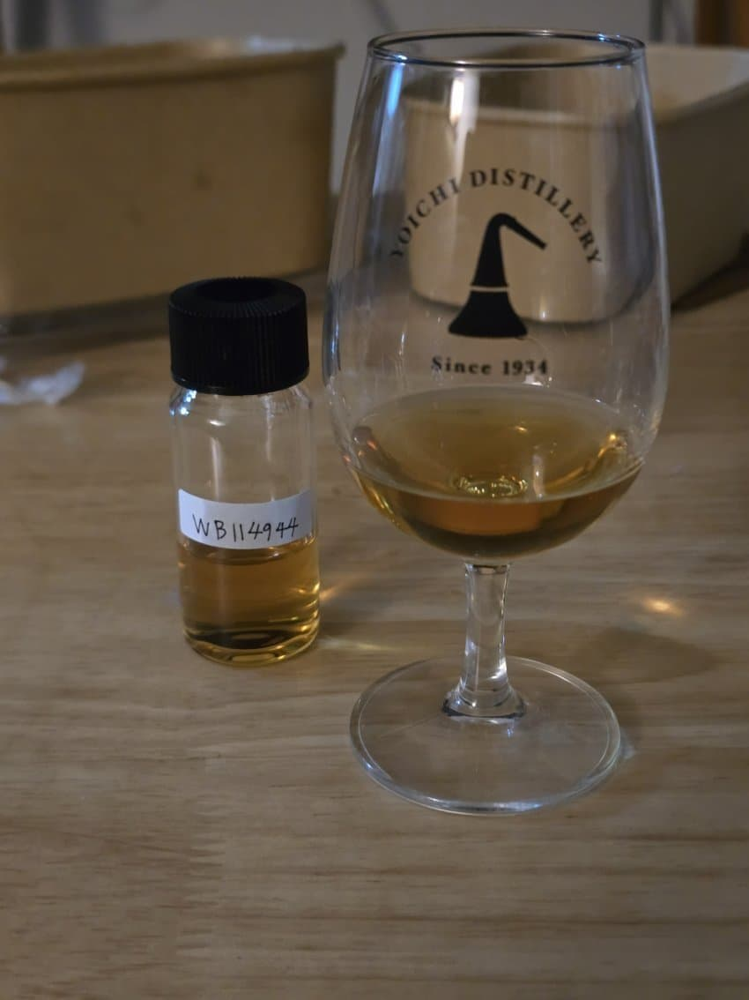

- Nose 스쳐지나가는 듯한 유산취, 적사과, 적사과의 사각사각한 과육이 생각나는 듯한 향이다. 적사과가 지나가고나면 올드 셰리같은 카라멜리한 달콤함이 느껴지며 미세한 케미컬과 아세톤.
- Palate 약간의 자글자글한 질감, 볼륨에 비해 바디감이 옅다. 단맛은 좀 덜한 편이며 향에서 느꼈던 적사과가 느껴진다.
- Finish 약간의 스모키, 탄닌은 절제되어 있다.
최종 점수
- 총점: 86.5
총평
- 향은 꽤 괜찮으나 맛이 좀 단순한 편이다. 43~46도 정도의 스까같고 생각나는 증류소는 딱히 없다.... 슾사 쪽에 개성이 옅은 증류소가 아닐까한다.. 대충 벙글톤 찍어봄
볼륨감은 바디와 도수에 비해 훌륭한 편인듯 하다.
댓글 12개